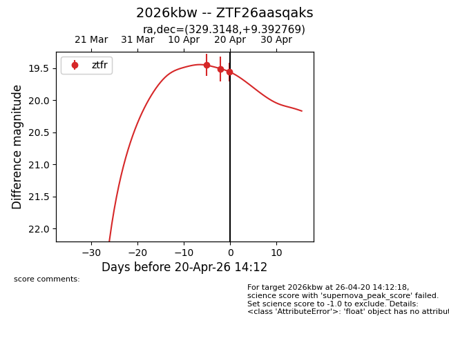
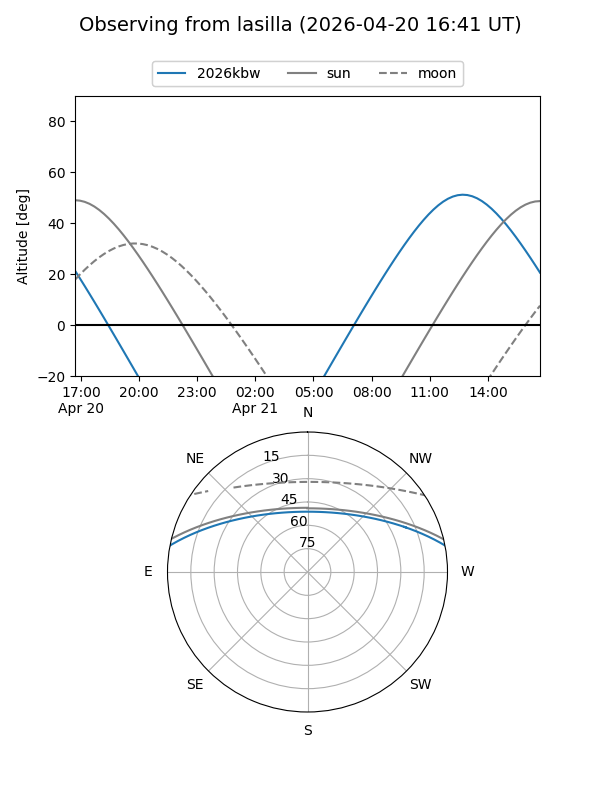
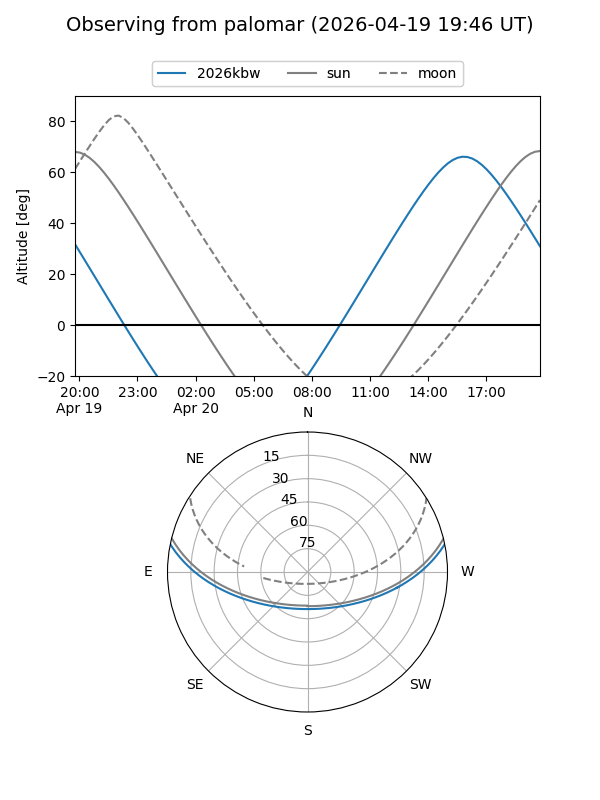
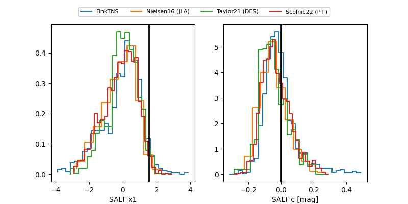

2026kbw
Target 2026kbw at 2026-04-20 14:23
Aliases and brokers:
FINK: link
Lasair: link
ALeRCE: link
TNS: link
YSE: link
alt names
ZTF26aasqaks (ztf,fink_ztf)
2026kbw (tns,yse)
Coordinates:
equatorial (ra, dec) = 329.3148,+9.39277
equatorial (HMS+DMS) = 21:57:15.54,+09:23:33.97
galactic (l, b) = (67.6715,-34.19631)
Flags:
Photometry:
last ztfr=19.56
3 ztfr detections
Lightcurve

Visibility


Additional plots
